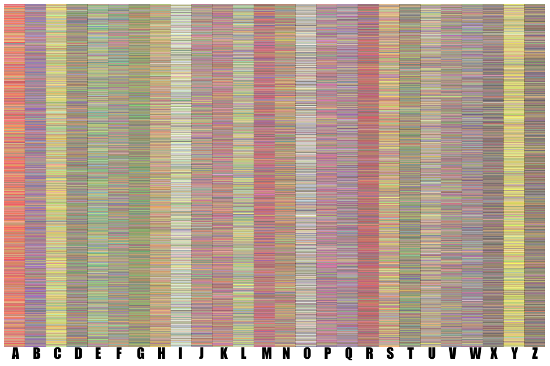

Some people can see colors in words or in music due to a condition called synesthesia. There are at least 80 different types of synesthesia, but we’ll be exploring grapheme-color synesthesia, in which synesthetes associate letters with colors. Below is a graph of colors that 6585 synesthetes see for each letter. The data for this project was taken from the paper Prevalence of Learned Grapheme-Color Pairings in a Large Online Sample of Synesthetes. The below image is a graph provided by the researchers showing the colors that 6,585 synesthetes see for each letter of the alphabet, where each row represents the results from one synesthete. Click the "Let's Explore!" button to see what else we can learn, or watch a video on the background of this project and visualization!

Explore by color frequency!
Here, colors are ranked from most frequent to least, bottom to top. Click on a color see its frequency across the alphabet.